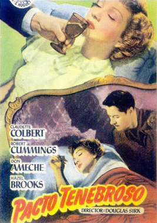
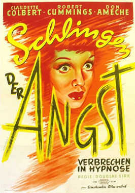
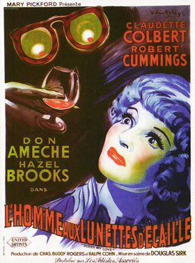

Sleep, My Love
Edgar Dearing (uncredited)
SYNOPSIS
Alison Courtland, a wealthy New Yorker, hasn't a clue how she ended up on a train bound for Boston. When she phones her husband, Richard, the police listen in and overhear that she had threatened him with a gun. On her flight home, fellow passenger, Bruce Elcott, falls in love with Alison.
Back home, Richard makes Alison agree to start seeing a psychiatrist, Dr. Rhinehart. But, it turns out that the man who shows up at the house for their first appointment is not Rhinehart. He is actually Charles Vernay, a photographer hired by Richard. Richard is having an affair with another woman, Daphne, and plans to get rid of Alison - and inherit her fortune - by driving her to suicide.
Elcott, who has come to suspect there is some kind of purposeful plan afoot to confuse and distress Alison, arrives just in time to find her, apparently under hypnosis, about to leap from a balcony to her death. Elcott discovers Vernay's role in the situation. Richard, meanwhile, attempts to drug Alison and make her kill the doctor herself.
Vernay realises he has been betrayed and shoots Richard; Vernay is later killed falling through a skylight while being chased by Elcott. It appears Elcott and Alison live happily ever after.
The film was based on a story by Leo Rosten which had been serialised in magazines. In November 1946 the screen rights were bought by Triangle Productions, a company consisting of Mary Pickford, husband Buddy Rogers and Ralph Cohn. It was Pickford's first film in twelve years - the last was The Gay Desperado - although Cohn and Rogers had produced films for Comet Productions. Pickford was involved in approving the cast and script.
Filming started 27 May 1947 at the Hal Roach Studios.


